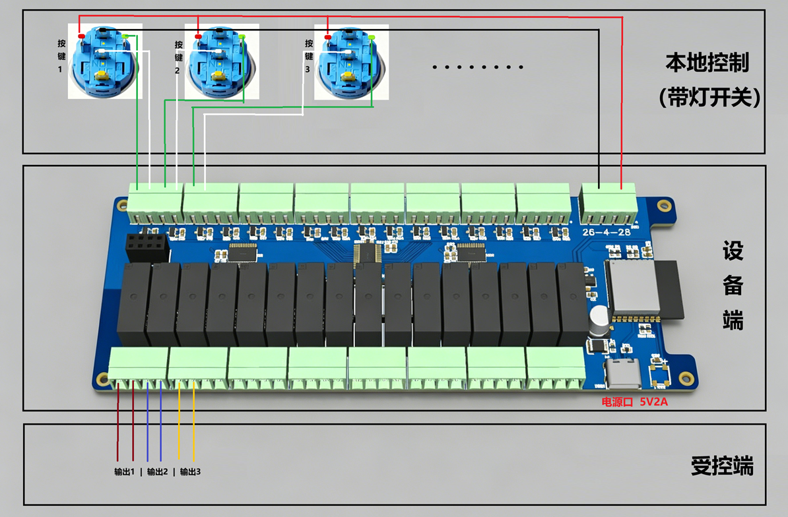

WiFi 16路继电器控制板 产品说明书
一、产品简介
本产品是一款可通过 手机/电脑随时随地进行远程开关控制，也可本地接入带灯按键直接控制的继电器控制板。无论您身在何处，只要设备连接了互联网，就可以通过远程平台控制 16 路设备的开关，本地按键同样支持实时操作各通道。
适用于：远程开关灯、水泵控制、电机启停、门禁控制、设备远程管理等场景。
二、包装内容
- WiFi 继电器控制板 × 1
- TYPE-C 数据线 × 1
三、快速开始
3.1 接线与上电
- 使用 TYPE-C 数据线连接控制板供电（5V/2A 电源适配器）
- 上电后，板载指示灯显示 红色呼吸灯，表示设备启动中
- 继电器接线：输出端子为无源干接点，COM（公共端）和 NO（常开端）组成一组开关。将设备电源线串联接入即可控制设备电源。
注意：接线前请确保设备断电操作。大功率设备请确认继电器额定负载，避免过载。
- 接线示意图：

- 本地按键接线：
接线 接线端子 线材颜色 按键正极 电源端子右侧两个GND ⚫ 按键负极 从右到左偶数端子分别代表第1-16路 ⚪ 灯正极 电源端子左侧两个5V 🔴 灯负极 从右到左奇数端子分别代表第1-16路 🟢
3.2 首次配置网络
首次使用需要配置 WiFi 网络：
- 用 TYPE-C 数据线将控制板连接至电脑
- 打开随附的上位机配置软件
- 选择对应的串口号，点击"打开"
- 在"WiFi 配置"区域输入 WiFi 名称和密码，点击"设置 WiFi"
- 设备将自动连接 WiFi，连接成功后指示灯变为黄色呼吸灯
3.3 连接远程服务器
- WiFi 连接成功后，设备会自动连接远程 MQTT 服务器
- 连接成功后指示灯变为绿色呼吸灯，表示设备就绪
四、工作模式说明
每路继电器可独立设置以下两种工作模式：
4.1 自锁模式（保持）
适用场景：开关灯、控制电器等需要保持通断的场景。
继电器根据指令开启或关闭后，会保持该状态不变，直到收到新的指令。例如：开启 → 灯一直亮，关闭 → 灯熄灭。
4.2 自复位模式（跟随）
适用场景：门禁开门、门铃、启动按钮等需要按住保持的场景。
本地按键：按住按键时继电器吸合，松开后继电器断开，输出实时跟随按键状态。
远程控制：收到开启指令后，继电器吸合约 1 秒 后自动断开。若 1 秒内再次收到开启指令，计时重新刷新，可保持持续吸合。
五、操作方式
5.1 本地按键控制
控制板上有 16 个按键接口（需外接按键），对应 16 路继电器：
- 按键 1（总开关）：按下切换总开关状态。关闭总开关时，所有通道自动关闭
- 按键 2-16：
- 自锁模式：按下切换对应通道的开关状态（需总开关已开启）
- 自复位模式：按住按键继电器吸合，松开即断开
5.2 远程控制
通过 MQTT 远程平台，可以对任意通道进行开关控制。控制指令下发后，设备即时响应并反馈状态。
六、指示灯说明
6.1 系统状态灯（WS2812 RGB 灯）
| 指示灯状态 | 设备状态 |
|---|---|
| 🔴 红色呼吸灯 | 启动中 / 网络未连接 |
| 🟡 黄色呼吸灯 | WiFi 已连接，等待服务器 |
| 🟢 绿色呼吸灯 | 已就绪，可正常使用 |
| ⚪ 白色快闪 | 正在接收指令或上报状态 |
6.2 通道状态灯
每路继电器都对应其本地按键的指示灯：
- 灯亮：该通道已开启
- 灯灭：该通道已关闭
七、配置工具使用说明
7.1 配置工具下载
下载配置工具：IOT-Relay.exe
7.2 功能介绍
| 功能区域 | 说明 |
|---|---|
| 串口连接 | 选择设备对应的串口，点击"打开"连上设备 |
| 设备信息 | 查看或修改设备编号和通道总数 |
| WiFi 配置 | 设置要连接的 WiFi 名称和密码 |
| 输出模式 | 对每路继电器单独设置 自锁/自复位 模式 |
7.3 设置步骤
1. 连接设备
- 选择串口号 → 点击"打开" → 状态显示"已连接"
2. 配置设备编号（可选）
- 输入设备 ID（如设备序列号）→ 点击"设置"
- 设备 ID 用于远程平台识别设备
3. 配置 WiFi
- 输入 WiFi 名称和密码 → 点击"设置 WiFi"
- 设备会自动重启网络连接
4. 设置输出模式
- 勾选 = 自锁模式，不勾选 = 自复位模式
- 点击"查询"查看当前模式，修改后点击"设置"保存
八、产品规格
| 项目 | 规格 |
|---|---|
| 供电方式 | TYPE-C 5V / 2A |
| 控制路数 | 16 路 |
| 每路模式 | 可独立设置自锁或自复位 |
| 无线连接 | WiFi 2.4GHz |
| 远程协议 | MQTTS（加密传输） |
| 配置方式 | 电脑上位机软件（串口） |
| 工作指示 | 系统状态灯 + 每路状态灯 |
九、使用注意事项
- 供电要求：请使用 5V/2A 电源适配器，供电不足可能导致继电器工作异常
- 首次使用：必须先通过电脑配置 WiFi 后才能进行远程控制
- 总开关：第 1 路为总开关，关闭时所有通道均无法开启
- 网络要求：设备需要稳定的 WiFi 环境，断网时将无法远程控制
- 安全提醒：接线和维护前请断开电源；控制大功率设备时请确认继电器额定负载
- 故障排查：
- 指示灯不亮 → 检查供电连接
- 一直红色呼吸 → WiFi 未连接，检查网络配置
- 一直黄色呼吸 → 已联网但未连上服务器，联系管理员
十、版本信息
| 版本 | 日期 | 更新内容 |
|---|---|---|
| v1.0.0 | 2025-04-27 | 初始版本发布 |
| v1.0.1 | — | 优化控制逻辑和按键响应 |
如有问题请联系 593790982@qq.com